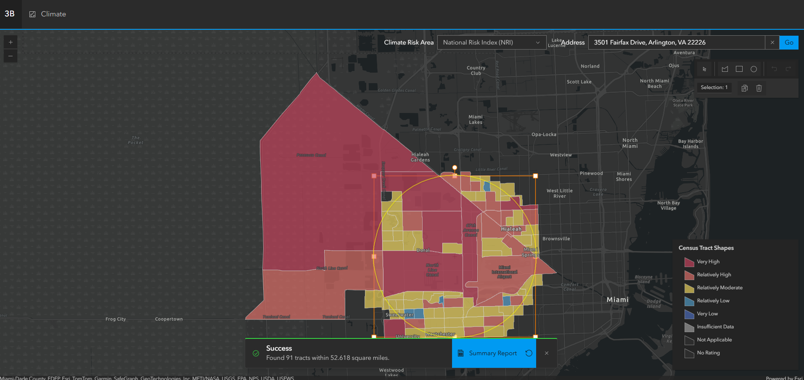
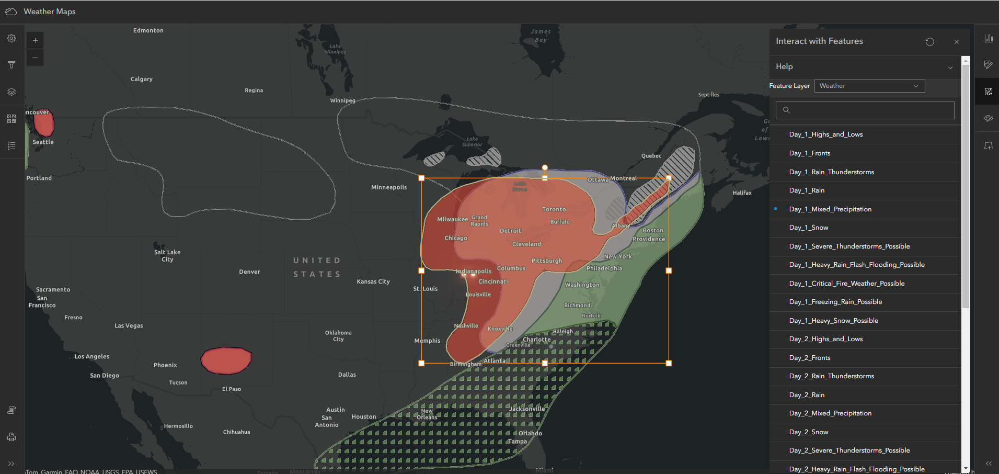
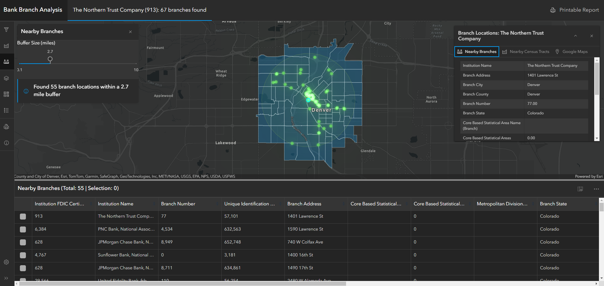

Climate Visualize Climate Risk and Social Vulnerability in a given area. Includes summary reports and visualizations to better understand total climate impact. Also integrates with the FFIEC geocoder to get additional demographics for a tract.
Explore current weather. Add your own layer and dynamically style feature. You can also filter features based on weather shapes.
Find all branch locations for a bank. Explore surrounding census tracts and find nearby branches from other banks.